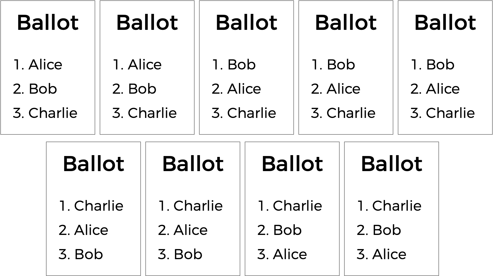

排序复选制
要解决的问题
你已经了解了多数制选举，它遵循一种非常简单的算法来确定选举的获胜者：每位选民投一票，得票最多的候选人获胜.
但多数制投票确实有一些缺点。例如，在一场有三个候选人的选举中，投出如下选票时会发生什么?

一份多数制投票会在这里宣布 Alice 和 Bob 平局，因为各有两票。但这是正确的结局吗?
还有另一种投票制度称为排序选择投票制度。在排序选择制度中，选民可以为多个候选人投票。他们不仅投票给自己最优先的选择，还可以按偏好顺序对候选人进行排序。由此产生的选票可能看起来如下所示.

这里，每位选民除了指定他们的第一偏好候选人外，还标明了他们的第二和第三选择。现在，之前平局的选举就可以有获胜者了。原本 Alice 和 Bob 打平，所以 Charlie 已经出局。但是选择了 Charlie 的选民偏好 Alice 而不是 Bob，因此 Alice 可以在这里被宣布为获胜者.
排序选择投票还可以解决多数制投票的另一个潜在缺陷。看一下下面的选票.

谁应该赢得这次选举？在多数制投票中，每位选民只选择他们的第一偏好，Charlie 以四票赢得选举，而 Bob 只有三票，Alice 只有两票。但大多数选民（9 人中的 5 人）更愿意选择 Alice 或 Bob 而不是 Charlie。通过考虑排序偏好，投票系统可能能够选择出更能反映选民偏好的获胜者.
一种这样的排序选择投票制度是即时排序复选制。在即时排序复选制选举中，选民可以按意愿对尽可能多的候选人进行排序。如果任何候选人获得了超过半数（超过 50%）的第一偏好选票，该候选人即被宣布为选举的获胜者.
如果没有候选人获得超过 50% 的选票，则发生”即时排序复选”。得票最少的候选人被从选举中淘汰，而最初选择该候选人作为第一偏好的选民，现在将考虑其第二偏好。为什么要这样做？实际上，这模拟了如果最不受欢迎的候选人在选举中一开始就不存在会发生什么.
此过程会重复进行：如果没有候选人获得多数选票，则排名最后的候选人被淘汰，任何投票给该候选人的选民将改投其下一个偏好（即尚未被淘汰的候选人）。一旦某位候选人获得多数选票，该候选人即被宣布为获胜者.
听起来比多数制投票稍微复杂一些，不是吗？但它可以说有一个优势，即选举结果能更准确地反映选民的偏好。在名为 runoff 的文件夹中，在名为 runoff.c 的文件里，创建一个程序来模拟排序复选制选举.
演示
分发代码
下载分发代码
登录 cs50.dev, 点击你的终端窗口，然后执行 cd 本身。你应该发现你的终端窗口的提示符类似于下面所示:
$
接下来执行
wget https://cdn.cs50.net/2026/x/psets/3/runoff.zip
以下载一个名为 runoff.zip 的 ZIP 压缩包到你的 codespace 中.
然后执行
unzip runoff.zip
来创建一个名为 runoff 的文件夹。你不再需要这个 ZIP 文件了，所以你可以执行
rm runoff.zip
然后在提示符后输入 “y” 并按回车，以删除你下载的 ZIP 文件.
现在输入
cd runoff
然后按回车键，将你自己移至（即打开）该目录。你的提示符现在应类似于下面所示.
runoff/ $
如果一切顺利，你应该执行
ls
并看到一个名为 runoff.c 的文件。执行 code runoff.c 应该会打开一个文件，你将在其中输入本题的代码。如果没有，请回溯你的步骤，看看能否找出哪里出错了!
理解 runoff.c 中的代码
当你需要扩展现有代码的功能时，最好首先确保理解它当前的状态.
首先看 runoff.c 的顶部。定义了两个常量：MAX_CANDIDATES 表示选举中候选人的最大数量，MAX_VOTERS 表示选举中选民的最大数量.
// Max voters and candidates
#define MAX_VOTERS 100
#define MAX_CANDIDATES 9
注意 MAX_CANDIDATES 用于确定数组 candidates 的大小.
// Array of candidates
candidate candidates[MAX_CANDIDATES];
candidates 是一个 candidate 的数组。在 runoff.c 中，一个 candidate 是一个 struct。每个 candidate 都有一个 string 字段表示其 name，一个 int 表示他们当前拥有的 votes 数，以及一个名为 eliminated 的 bool 值，表示该候选人是否已被淘汰出选举。数组 candidates 将跟踪选举中的所有候选人.
// Candidates have name, vote count, eliminated status
typedef struct
{
string name;
int votes;
bool eliminated;
}
candidate;
现在可以更好地理解 preferences，即二维数组。数组 preferences[i] 将表示选民编号 i 的所有偏好。整数 preferences[i][j] 将存储来自 candidates 数组中作为选民 i 的第 j 偏好候选人的索引.
// preferences[i][j] is jth preference for voter i
int preferences[MAX_VOTERS][MAX_CANDIDATES];
程序还有两个全局变量：voter_count 和 candidate_count.
// Numbers of voters and candidates
int voter_count;
int candidate_count;
现在来看 main。注意，在确定候选人的数量和选民的数量之后，主投票循环开始运行，给每位选民提供了投票机会。当选民输入他们的偏好时，vote 函数被调用以跟踪所有偏好。如果在任何时候选票被判定为无效，程序将退出.
一旦所有选票统计完毕，另一个循环开始：这个循环将持续执行排序复选制的过程——检查是否有获胜者并淘汰排名最后的候选人，直到产生获胜者.
这里第一个调用的是名为 tabulate 的函数，它应查看所有选民的偏好并计算当前投票总数，方法是查看每位选民尚未被淘汰的首选候选人。接下来，print_winner 函数应打印出获胜者（如果有的话）；如果有，程序就结束了。否则，程序需要确定仍在选举中的任何候选人获得的最少票数（通过调用 find_min）。如果结果是选举中的所有人都以相同的票数打平（由 is_tie 函数确定），则选举被宣布为平局；否则，排名最后的候选人（们）通过调用 eliminate 函数被淘汰.
如果你往文件更下方看，你会看到其余的函数——vote、tabulate、print_winner、find_min、is_tie 和 eliminate——都留给你来完成! 你应该只修改 runoff.c 中的这些函数，不过如果你想的话，可以在 runoff.c 顶部 #include 额外的头文件.
提示
点击下面的折叠面板阅读一些建议!
完成 vote 函数
完成 vote 函数.
- 该函数接受三个参数：
voter、rank和name. - 如果
name与某个有效候选人的名字匹配，那么你应该更新全局 preferences 数组，以表示选民voter将该候选人作为其第rank偏好。请记住0是第一偏好，1是第二偏好，依此类推。你可以假设没有两个候选人会有相同的名字. - 如果偏好被成功记录，函数应返回
true。否则函数应返回false。例如，考虑当name不是其中一个候选人的名字时.
在编写代码时，请考虑以下提示:
- 回想一下
candidate_count存储了选举中的候选人数量. - 回想一下你可以使用
strcmp来比较两个字符串. - 回想一下
preferences[i][j]存储了作为第i位选民第j排序偏好的候选人的索引.
完成 tabulate 函数
完成 tabulate 函数.
- 该函数应更新每位候选人在排序复选当前阶段的
votes数量. - 回想一下，在排序复选的每个阶段，每位选民实际上是投票给他们尚未被淘汰的最偏好候选人.
在编写代码时，请考虑以下提示:
- 回想一下
voter_count存储了选举中的选民数量，并且对于我们选举中的每位选民，我们要计算一张选票. - 回想一下，对于选民
i，他们的首选候选人由preferences[i][0]表示，第二选择候选人由preferences[i][1]表示，依此类推. - 回想一下
candidatestruct有一个名为eliminated的字段，如果候选人已被淘汰，该字段将为true. - 回想一下
candidatestruct有一个名为votes的字段，你可能需要为每位选民偏好的候选人更新该字段. - 回想一下，一旦你为某位选民的首位未被淘汰的候选人投了票，你应该就此停止，而不继续往下检查他们的选票。你可以在条件语句中使用
break来提前跳出循环.
完成 print_winner 函数
完成 print_winner 函数.
- 如果任何候选人获得了超过半数的选票，应打印其名字，并且函数应返回
true. - 如果还没有人赢得选举，函数应返回
false.
在编写代码时，请考虑这个提示:
- 回想一下
voter_count存储了选举中的选民数量。鉴于此，你如何表示赢得选举所需的票数?
完成 find_min 函数
完成 find_min 函数.
- 该函数应返回仍在选举中的任何候选人的最低得票总数.
在编写代码时，请考虑这个提示:
- 你可能需要遍历候选人，找到一位既仍在选举中又得票最少的候选人。在遍历候选人时你应该跟踪哪些信息?
完成 is_tie 函数
完成 is_tie 函数.
- 该函数接受一个参数
min，它将是选举中任何人当前拥有的最低票数. - 如果选举中剩余的每位候选人都拥有相同数量的票数，该函数应返回
true，否则应返回false.
在编写代码时，请考虑这个提示:
- 回想一下，当选举中仍在场的每位候选人拥有相同数量的票数时，就会发生平局。还要注意，
is_tie函数接受一个参数min，这是任何候选人当前拥有的最低票数。你如何使用min来判断选举是否为平局（或者，反过来，不是平局）?
完成 eliminate 函数
完成 eliminate 函数.
- 该函数接受一个参数
min，它将是选举中任何人当前拥有的最低票数. - 该函数应淘汰拥有
min票数的候选人（们）.
讲解视频
如何测试
请务必测试你的代码以确保它能够处理…
- 任意数量候选人的选举（最多
MAX即9个） - 通过姓名投票给候选人
- 对不在选票上的候选人进行无效投票
- 如果只有一位获胜者，打印出选举的获胜者
- 在剩余所有候选人平局的情况下不淘汰任何人
正确性
check50 cs50/problems/2026/x/runoff
代码风格
style50 runoff.c
如何提交
在终端中执行以下命令提交你的作业，并按提示完成操作。
submit50 cs50/problems/2026/x/runoff